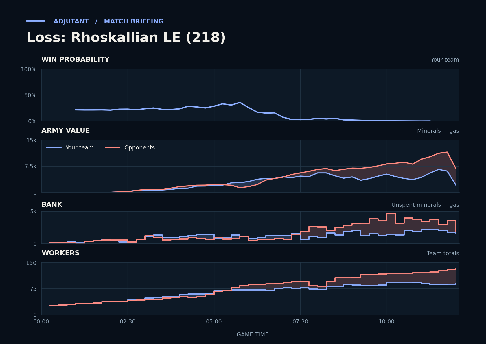

Loss: Rhoskallian LE (218)
Provisional debrief. The full report (timeline, insights and analysis) is being generated.

Cached narration uses different analysis inputs (facts, engine notes, prompts or model settings). It has not been regenerated for this report.
**Loss.** At 8:19 your army went in behind on a smaller economy, and NaCl's Cyclones then won the trade.
**Why**
- 6:49–7:32: SirSmokeAlot's Spire was never on your screens before 6:04. Their Mutalisks hit Scallop's main with no Turret up and killed SCVs, leaving Scallop at 29 workers by 8:00.
- 8:19–9:15: Unseen, they had 21 more workers and had built more army; their Cyclones won the trade.
- 8:27–8:52: TakeTheTip was supply-blocked at 114/114 mid-fight after Overlords died, with minerals piling up.
Current engine analysis: Loss. The model’s estimated win chance fell from 28% to 16% between 5:00 and 6:45; economic indicators contributed most. The biggest fight came at 11:42–12:05 (6,600 lost, 5,600 killed).